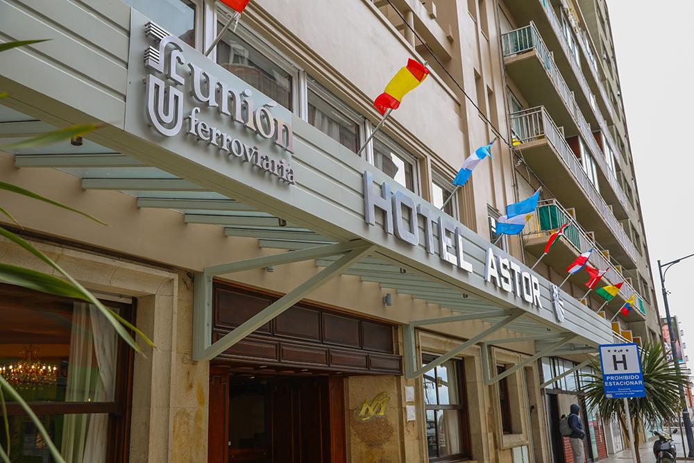
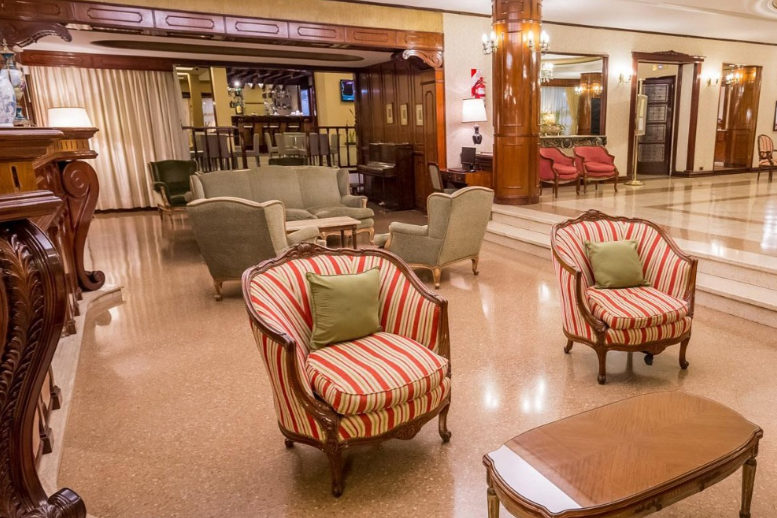
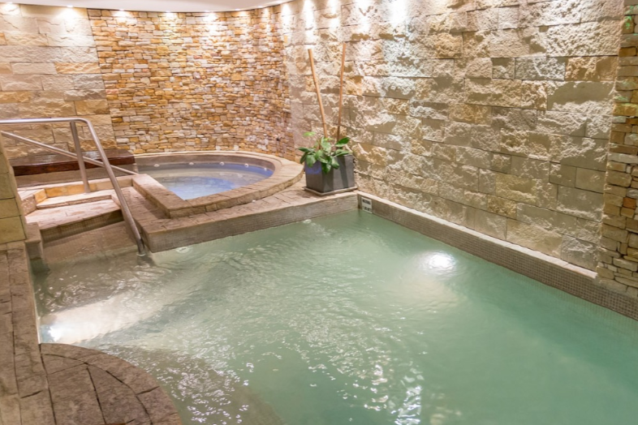
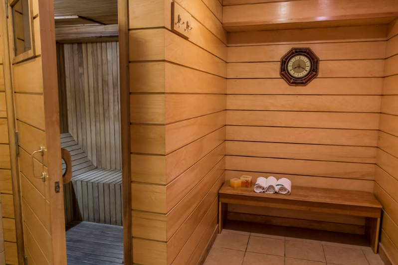
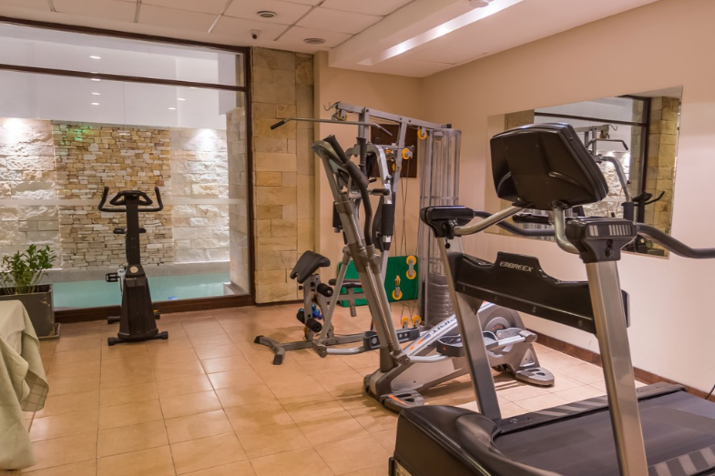
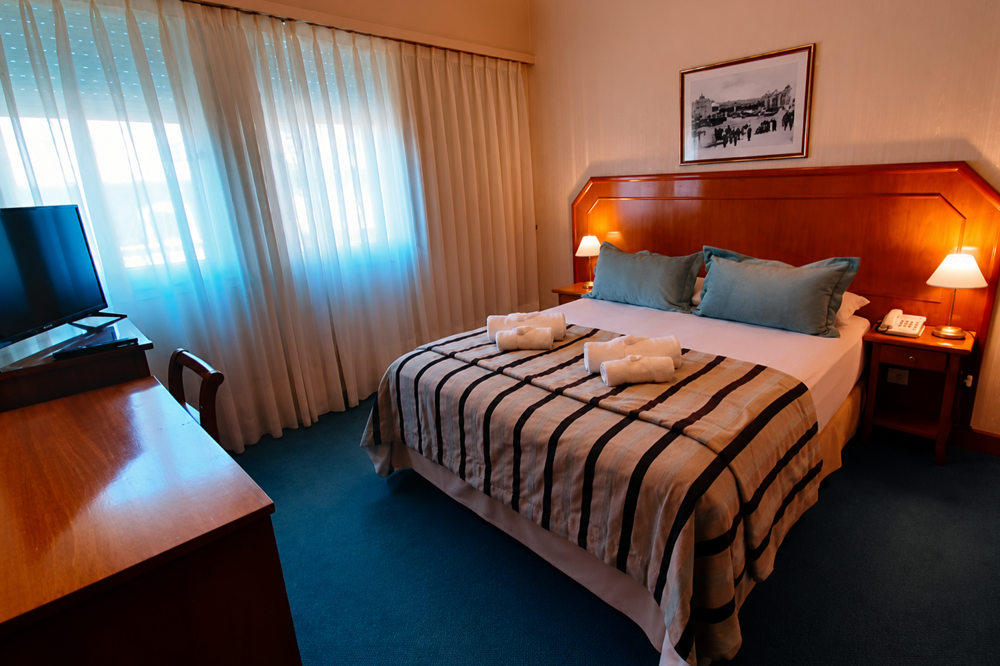
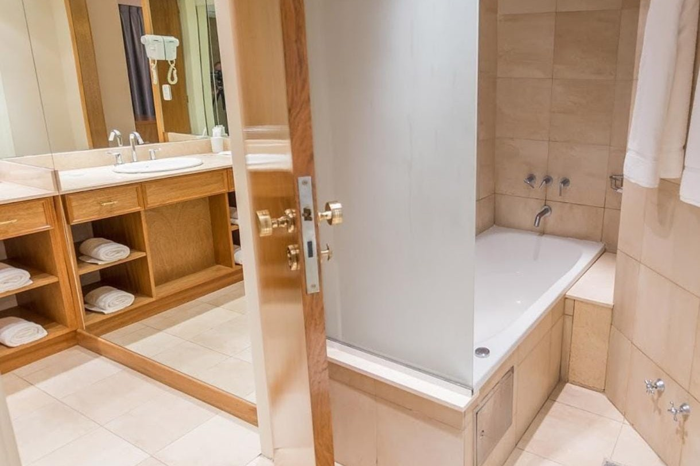

Hotel Astor
Mar del Plata, Buenos Aires · AMUF
Conocé el hotel







Sobre el hotel
El Hotel Astor es un establecimiento de cuatro estrellas ubicado en el centro de Mar del Plata, a aproximadamente 150 metros de la playa.
Desde 2019 forma parte de la oferta turística de AMUF y Unión Ferroviaria, brindando alojamiento y servicios para disfrutar de una estadía en familia.
Instalaciones y servicios
- 94 habitaciones, incluyendo suites y habitaciones comunicadas.
- Piscina cubierta y climatizada.
- Spa con jacuzzi, sauna y gimnasio.
- Restaurante y snack bar.
- Recepción y servicio de guardaequipaje.
- Salones para reuniones y eventos.
- Ascensores.
Comodidades
- Aire acondicionado y calefacción.
- Wi-Fi gratuito.
- Televisión por cable.
- Desayuno buffet incluido.
- Servicio a la habitación y lavandería.
- Sala de masajes.
- Estacionamiento opcional con costo adicional.
Horarios
- Ingreso: a partir de las 14:00.
- Salida: hasta las 10:00.
Ubicación
Entre Ríos 1649, Mar del Plata, Buenos Aires.
Requisitos y documentación
- Estar empadronado a AMUF.
- DNI del titular (frente y dorso).
- Último recibo de haberes.
- DNI de los acompañantes (frente y dorso).